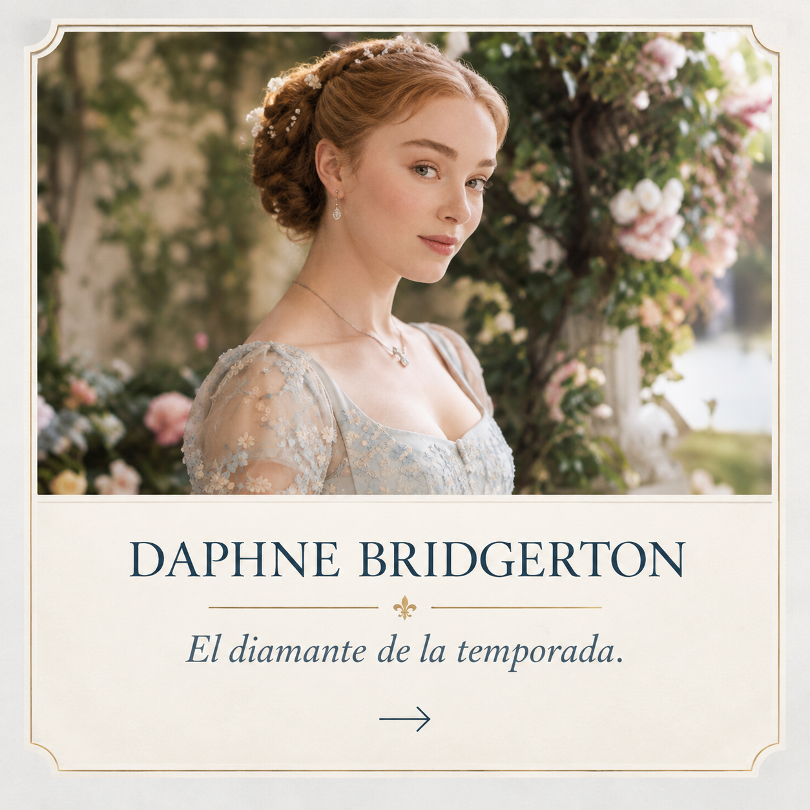
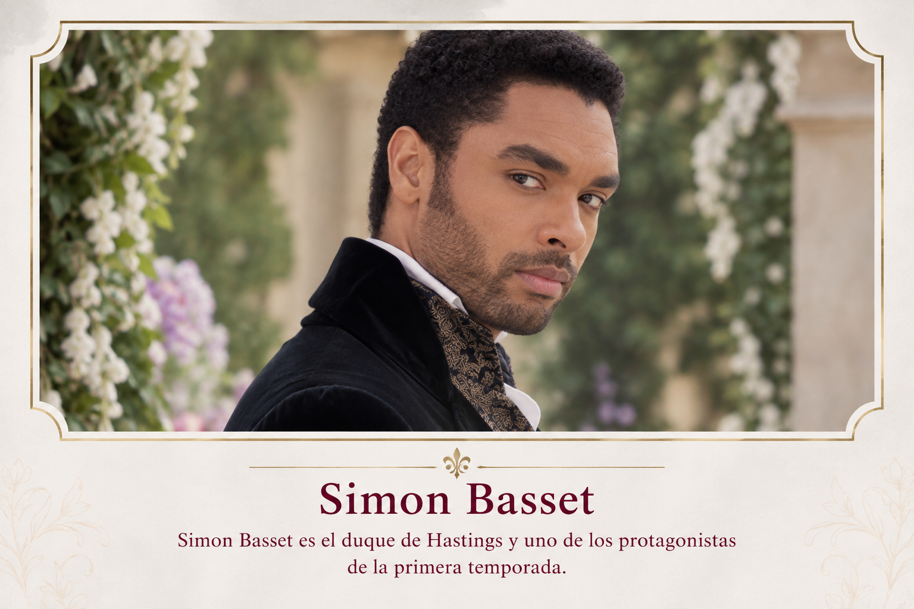
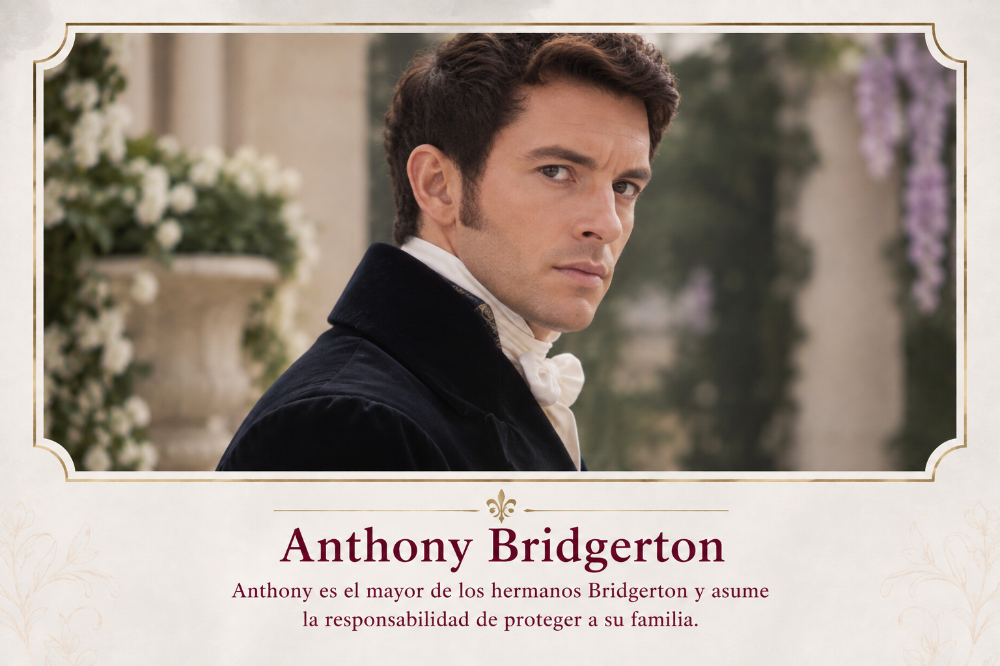
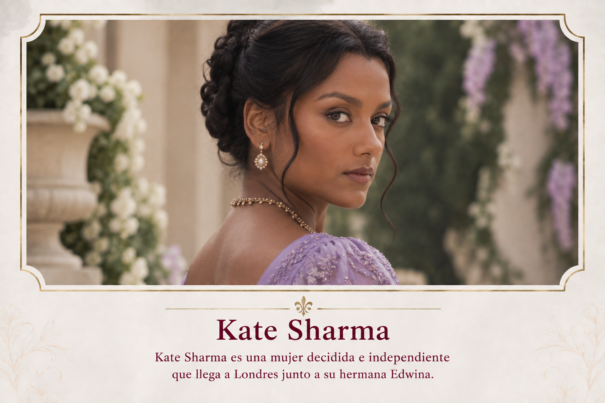
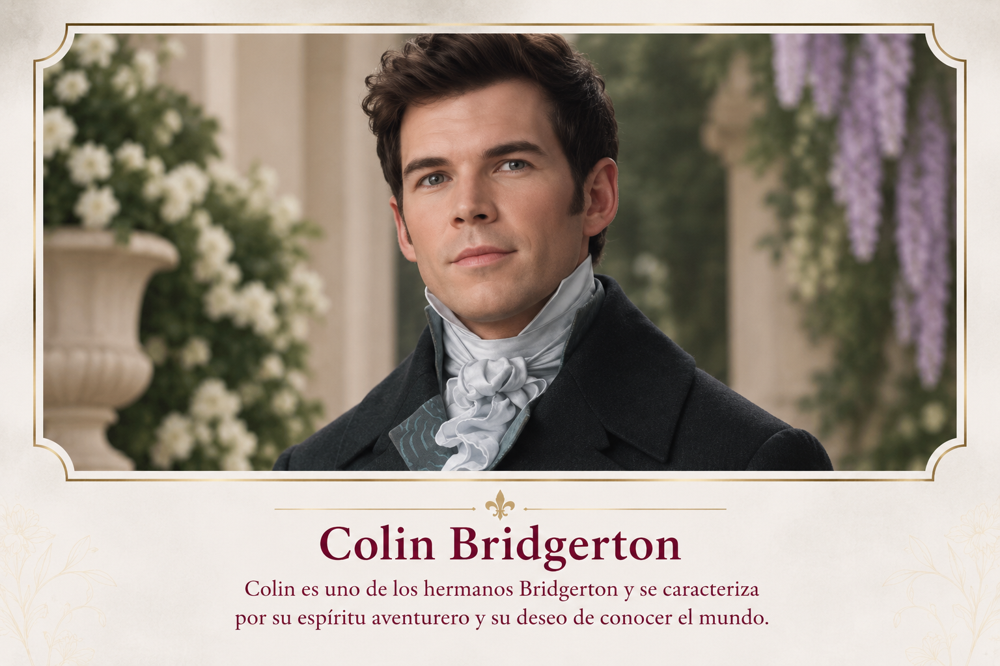
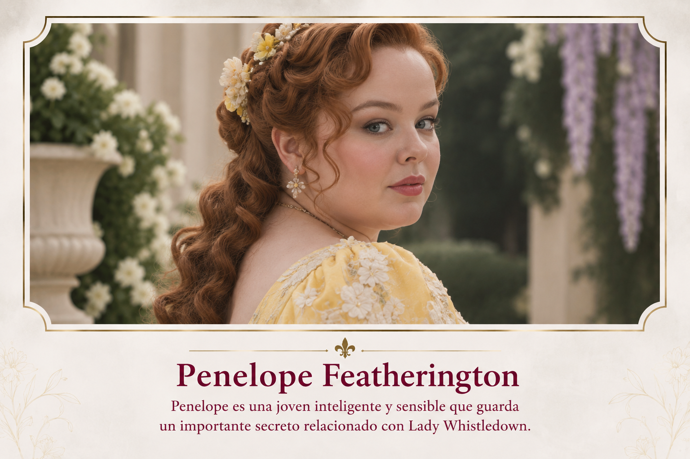

Daphne Bridgerton

Daphne es la hija mayor de la familia Bridgerton y protagonista de la primera temporada.

Daphne es la hija mayor de la familia Bridgerton y protagonista de la primera temporada.

Simon Basset es el duque de Hastings y uno de los protagonistas de la primera temporada.

Anthony es el mayor de los hermanos Bridgerton y asume la responsabilidad de proteger a su familia.

Kate Sharma es una mujer decidida e independiente que llega a Londres junto a su hermana Edwina.

Colin es uno de los hermanos Bridgerton y se caracteriza por su espíritu aventurero y su deseo de conocer el mundo.

Penelope es una joven inteligente y sensible que guarda un importante secreto relacionado con Lady Whistledown.